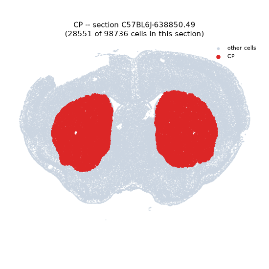
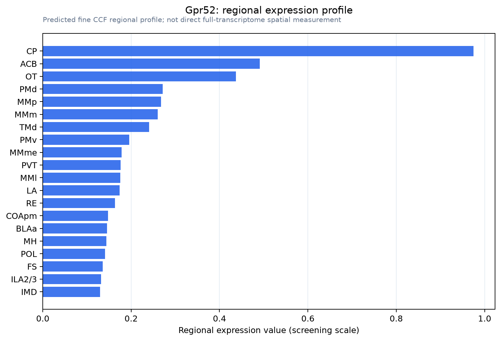

Gpr52
G protein-coupled receptor 52
Spatial tier: STRICT_EXCLUSIVE · Class: GPCR · Top region: CP (Caudoputamen) · Positive regions: 7/554
45.4Discovery Score
39.9Targetability Score
CEvidence grade C
What this means: Gpr52: predicted fine-region profile is strict-exclusive, with 7 positive regions out of 554 (limit 12); direct spatial validation is required.
Function in CP: evidence, prediction, innovation
- Gene function
- Gpr52 encodes an orphan class-A GPCR that is constitutively active and couples to Gs, raising cAMP without a known endogenous ligand. Its coding sequence lies within an intron of Rabgap1l. Downstream it acts through cAMP but in a PKA-independent, Rab39B-dependent route that stabilises huntingtin protein.
- Region function
- The caudoputamen is the basal-ganglia input nucleus whose D1 and D2 spiny projection neurons drive action selection, habit learning and reward; D2 neurons here are the cells lost earliest in Huntington's disease.
- Published in this region
- direct Yao et al. 2015 (eLife) showed Gpr52 is striatum-enriched and concentrated in D2 medium spiny neurons, stabilising wild-type and mutant huntingtin via cAMP-dependent, PKA-independent Rab39B signalling; heterozygous knockout lowered huntingtin selectively in striatum of HD knock-in mice, and Gpr52 reduction rescued motor deficits in fly HD models and neuronal loss in patient iPSC neurons. Wang et al. 2021 (J Med Chem) developed the antagonist Comp-43, which lowered mutant huntingtin and improved phenotypes in HdhQ140 mice.
- Predicted function
- Prediction: constitutive Gs activity of GPR52 sets a tonic cAMP set-point in D2 caudoputamen neurons, amplifying A2A-like signalling and opposing D2 inhibition, so agonists (FTBMT, 3-BTBZ) should suppress hyperlocomotion with antipsychotic-like effects while antagonists lower huntingtin and disinhibit indirect-pathway output. Knockout should reduce striatal cAMP tone, increase locomotor responses to dopamine agonists and slow degeneration in HD models.
- Innovation
- ★★☆☆☆ 2/5 GPR52 is already a well-developed striatal drug target for Huntington's disease and psychosis, though its normal circuit role in caudoputamen behaviour remains thinly characterised.
- Tools
- Gpr52 knockout mice, agonists FTBMT and 3-BTBZ, antagonist Comp-43 (Wang et al. 2021), striatal D2-neuron access via Adora2a-Cre (MMRRC 036158-UCD) and Drd2-Cre, published GPR52 cryo-EM structures for structure-based ligand design.
- References
Direct evidence located at the region
No Allen ISH section could be located at this region's centroid for the recorded experiments.
Look it up yourself: Allen Mouse Brain ISH for Gpr52Allen reference atlas: CP (structure 672)ABC Atlas MERFISH viewer(in the ABC Atlas choose dataset MERFISH-C57BL6J-638850-CCF, colour cells by gene "Gpr52" or by parcellation_substructure "CP")All genes confined to CP + 3-D brain
Direct spatial evidence
MERFISH REGION LOCATOR

Regional expression figure

Predicted WMB × fine-CCF profile; not direct full-transcriptome spatial measurement.
Spatial profile
Evidence and specificity
- Evidence status
- PREDICTED_FINE
- Direct sources
- None; predicted localization only
- Exclusive threshold
- 12 positive regions out of 554
- Spatial specificity
- 0.352
- Top-region fraction
- 0.137
- Filter status
- PASS
Interpretation limits
- Cell-type-to-region projection is imputed expression, not direct spatial measurement.
- Adult reference atlases do not establish stability across age, sex, strain, state, or disease.
- Transcript abundance does not guarantee protein abundance or genetic-tool performance.